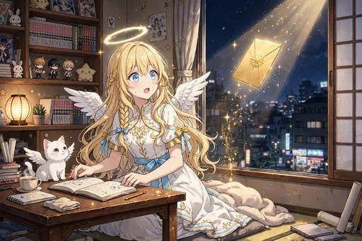
ノーマル
金の招待状
金の招待状が届き、モコと首をかしげるセラフィナ。ご近所の神々との出会いの始まりです。第8弾の幕開け。
第8弾「神仏ご近所編」のカード全30種です。日本の神々・仏さまとのご近所づきあいの場面です（神仏は尊厳のある描写のみ）。
カードの画像はWeb鑑賞用サイズです。原画の高解像度イラストは、この弾のイラストパックでご覧いただけます。
この弾の所持 0 / 30種（0%）― あと30種で、この弾はコンプリートです
カードの画像はWeb鑑賞用サイズです。原画の高解像度イラストは第8弾『神仏ご近所編』のパック紹介ページからBOOTHのパックでご覧いただけます。ガチャで所持しているカードには「所持 ×N」と表示されます。

ノーマル
金の招待状が届き、モコと首をかしげるセラフィナ。ご近所の神々との出会いの始まりです。第8弾の幕開け。
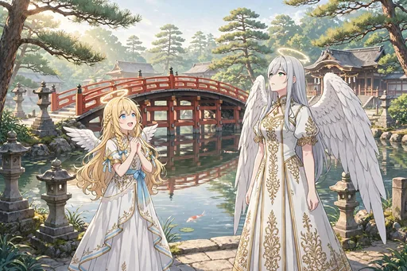
ノーマル
住吉大社の反橋を渡るセラフィナとガブリエラ。ご近所参りの最初の一歩です。
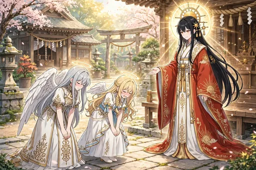
レア
天照大御神と対面し、深くお辞儀をする二人。日本の神々の中心との、緊張の顔合わせです。
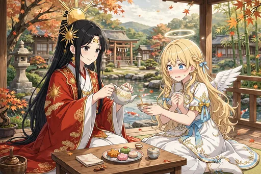
ノーマル
天照大御神にお茶をお出しする、緊張の給仕の場面。作法の一つひとつに心を込めます。
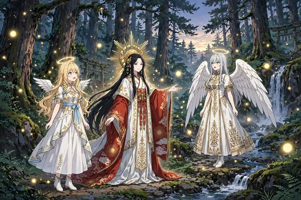
レア
森に差す無数の柔らかな光に、八百万の神々という在り方を感じる場面。天使たちには新鮮な驚きでした。
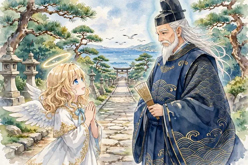
ノーマル
海辺の参道で住吉大神と出会う場面。海の神様とのご近所づきあいが始まります。
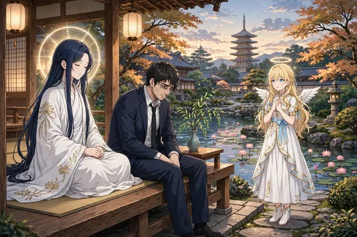
ノーマル
四天王寺界隈で、疲れた会社員の話を聞く観音菩薩と出会う場面。癒しの在り方に通じるものを感じます。
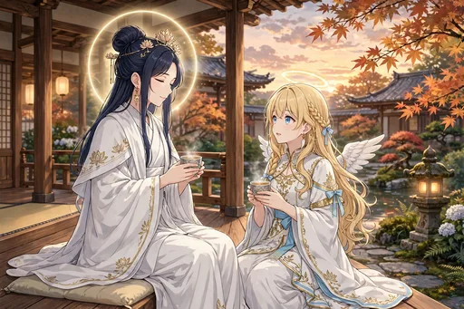
レア
観音菩薩とお茶を飲みながら教わる場面。慈しみの心について、静かに学ぶ時間です。
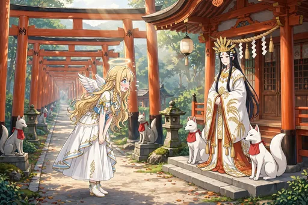
ノーマル
お稲荷さん（宇迦之御魂神）と白狐に迎えられ、千本鳥居を参拝する場面。朱の連なりの美しさに見とれます。
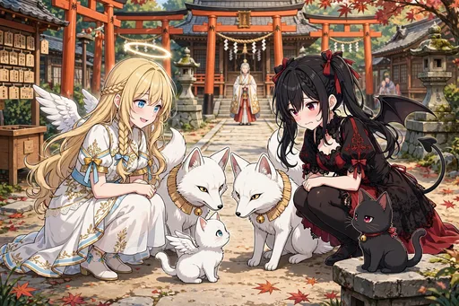
ノーマル
白狐とモコ・ノワールの対面をお稲荷さんが見守る場面。小さな者同士の顔合わせです。
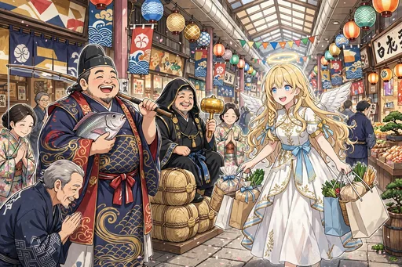
ノーマル
恵比寿・大黒天と商店街の朝市をめぐる場面。商売繁盛の神々と、下町の賑わいです。
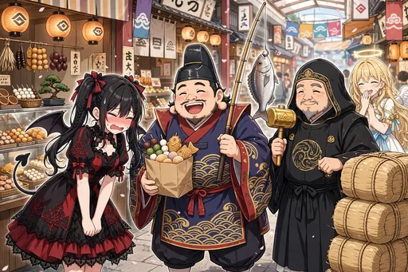
ノーマル
恵比寿の笑顔とお菓子に固まるルチア。福の神の前では、悪魔も形なしです。
ノーマル
湖畔で琵琶を奏でる弁財天の場面。水辺に響く音色に、しばし時を忘れます。
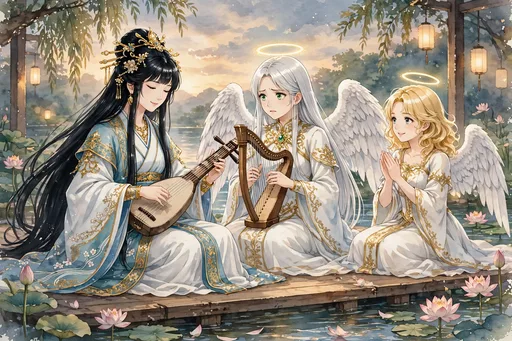
ノーマル
弁財天の琵琶に、ガブリエラが竪琴で合奏を試みる場面。芸能の神様との共演です。
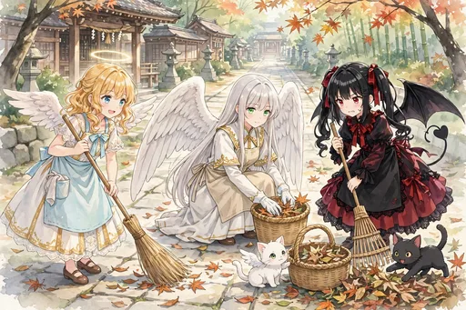
ノーマル
境内の清掃を手伝うセラフィナ、ルチア、ガブリエラと、モコとノワール。ご近所づきあいは、まず奉仕から。
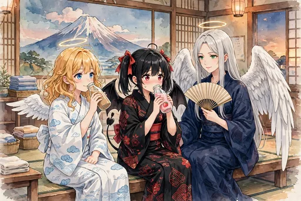
ノーマル
銭湯の湯上がり、浴衣姿で瓶牛乳を楽しむ三人。神仏との日々の合間の、ほっとする休息です。
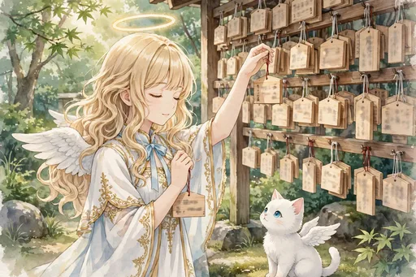
ノーマル
絵馬に願いを込めるセラフィナを、モコが見上げる場面。誰かの幸せを願う気持ちは、天界も日本も同じです。
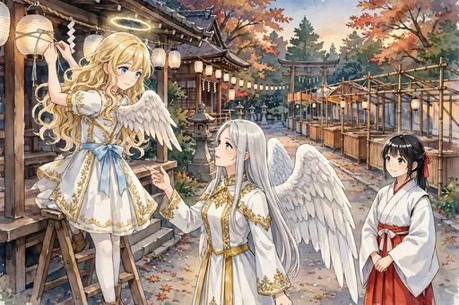
ノーマル
祭りの準備で、提灯の飾り付けを手伝う場面。ご近所の行事に加わる楽しさがあります。
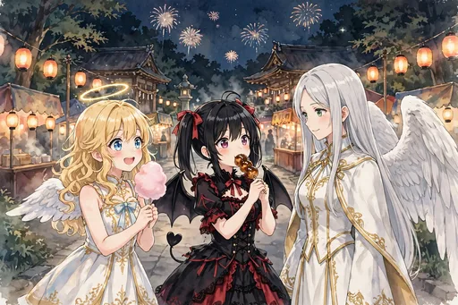
レア
綿あめとたこ焼きと花火の祭りの夜。神様の行事を、人々の賑わいの中で楽しみます。
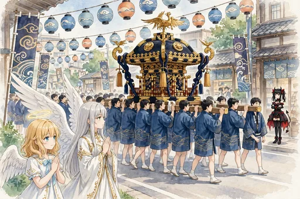
ノーマル
神輿渡御を沿道から手を合わせて見送る場面。街の活気と祈りが一緒になった行事です。
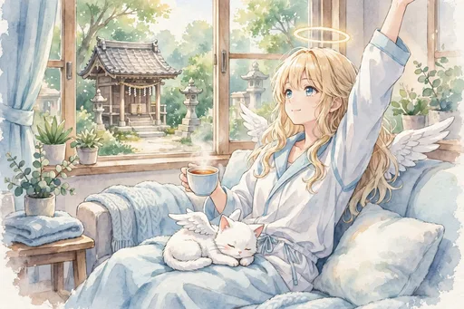
ノーマル
部屋着で日曜の朝のお茶を楽しむセラフィナとモコ。ご近所づきあいの日々の中の、何気ない朝です。
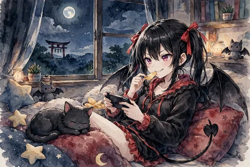
ノーマル
部屋着で夜のゲームに興じるルチアとノワール。悪魔の休日も、日本の暮らしに馴染んでいます。
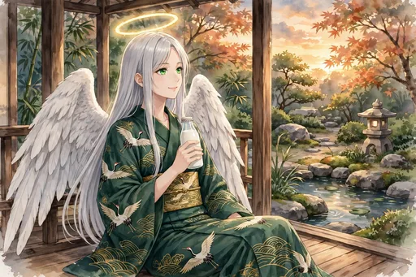
ノーマル
湯上がりの浴衣で、縁側で瓶の牛乳を飲むガブリエラ。先輩天使のくつろいだ夕べです。
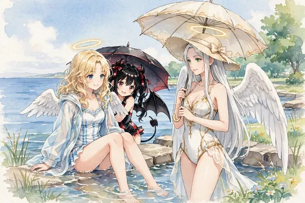
レア
海辺で水着の三人が涼む夏の日。神仏ご近所編のサービスシーンのひとつです。
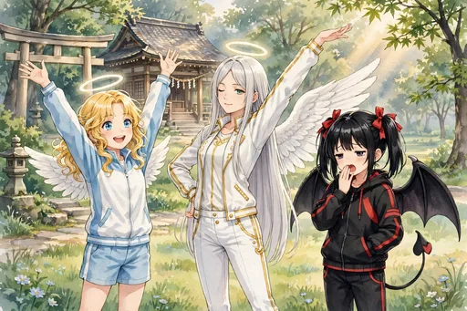
ノーマル
朝の公園で、トレーニングウェアの三人がストレッチをする場面。健康的な一日の始まりです。
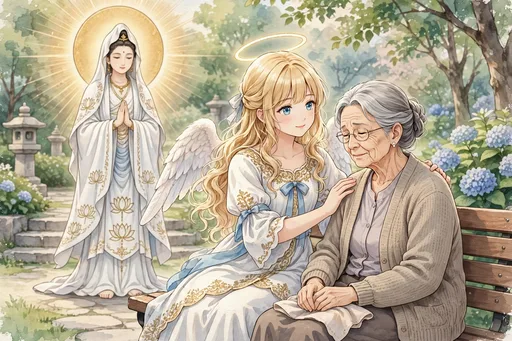
ノーマル
観音菩薩に習い、年配の女性の肩にそっと手を添えるセラフィナ。教わった慈しみを、癒しの現場で実践します。
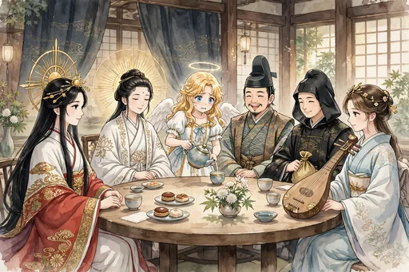
レア
神々のお茶会で、緊張しながら給仕をするセラフィナ。ご近所づきあいの集大成のような席です。
レア
夕日の海を前に、住吉大神へ一日のお礼のお辞儀をする場面。第8弾の結びにふさわしい静かな一枚。
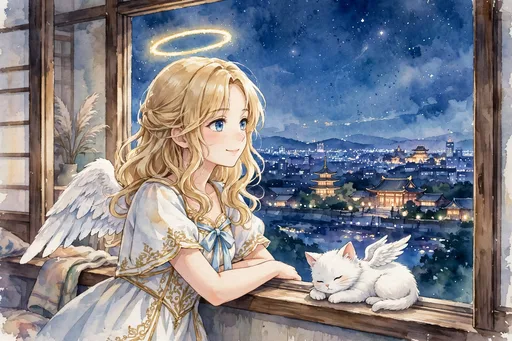
ノーマル
日本橋の窓から、神社仏閣の灯りをモコと眺める夜。ご近所になった神々への親しみを感じます。
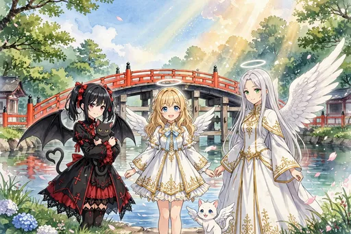
激レア
反橋を背に立つ三人とモコ・ノワール、空に差す金色の光。第8弾「神仏ご近所編」のキービジュアルです。